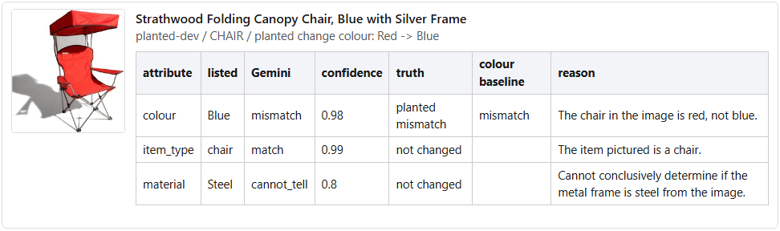

Listing mismatch detector
Catches product listings whose photo contradicts the text.
- Vision model with abstention
- Pre-registered evaluation
- Your key stays in your browser

Why it matters
- Returns: a photo that disagrees with the text drives "not as described" returns.
- Catalogue trust: shoppers stop trusting listings after a few wrong ones.
- Seller ops: a short flag list beats reading every listing by hand.
How it works
1. Read the listing
Photo, title and attributes: category, colour, material.
2. Compare per attribute
A Gemini vision model returns match, mismatch or cannot tell, with a reason.
3. Flag only when sure
Below confidence 0.9 it abstains instead of guessing.
Covers shoes, chairs, tables and sofas (Amazon Berkeley Objects data). The demo has a Results mode and a Live mode where you bring your own Gemini key.
Evaluation design held-out evaluation in progress
- Frozen gate: pass criteria, data, method and labels were fixed with hashes before any held-out test.
- Held-out set: 200 natural items labelled by the owner, without seeing model output.
- Planted cases: real listings with one attribute swapped, so the right answer is known. Reported separately from natural ones.
- Abstention: "cannot tell" is a valid answer, and the threshold was set on development data only.
No results are published yet. The Results page shows a pilot on practice listings, labelled as not a fair test.
Built by
Product, pre-registered evaluation and quality gates specified by Anirudh Kaushik (product manager); AI coding agents implemented it. A portfolio project with no users.
Sibling project: ClaimCheck, a browser extension that checks claims on product pages.